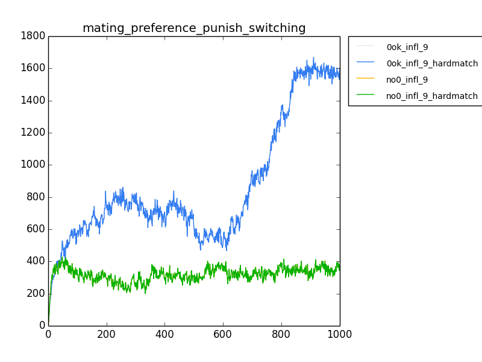
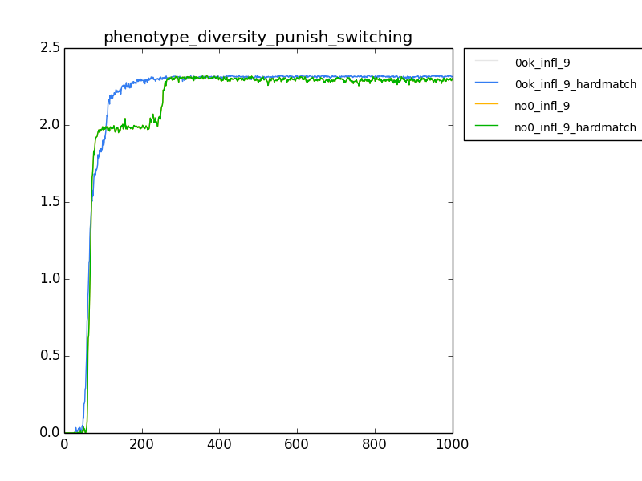
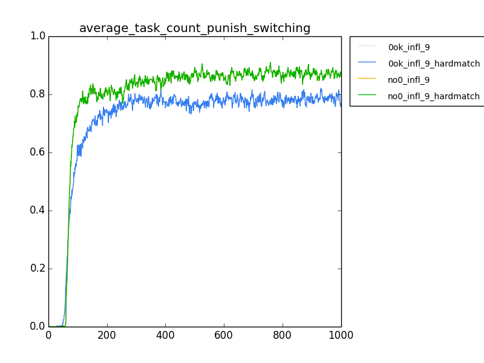
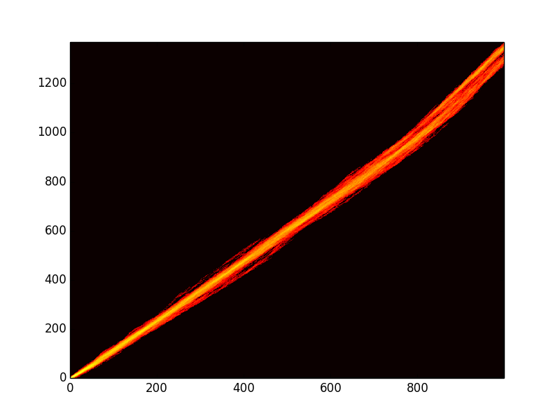
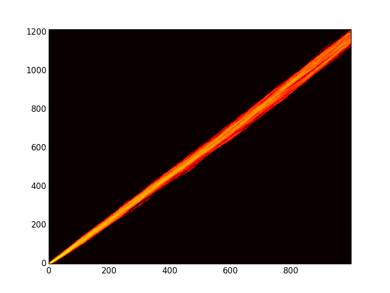

Ok, I really didn't do anything last week, but I thought about it a bit. Charles suggested the resource punishment for switching tasks, exactly the way I'd tried it before, but which had failed. But, he suggested using mult instead of add. :/ Trying it.
I have actually generated a ton of flame graphs. I'll add them to the previous weeks.
Ok, had a short meeting with Charles. Explained that the punishment for switching tasks seems to be working, and that we're getting what seem to be stable branches in the flame graph. I think the next step is to figure out what is actually going on, and who is actually using the thingies. I can create an output file that reads the population dumps into analyze mode and prints out what tasks each thingy is doing... maybe. I'll have to see if that's something analyze mode can do. :/
Disallow zero after some time in the run?
Did a series of runs with the working switching punishment (via environment file)
python ../../../../research_scripts/quickplot.py \ mating_preference_punish_switching \ female_mate_preference_data.dat 11 ../data1_allow_zero_punish_switching/ 0ok_infl_9 \ female_mate_preference_data.dat 11 ../data1_allow_zero_punish_switching_hardmatch/ 0ok_infl_9_hardmatch \ female_mate_preference_data.dat 11 ../data1_no_zero_punish_switching/ no0_infl_9 \ female_mate_preference_data.dat 11 ../data1_no_zero_punish_switching_hardmatch/ no0_infl_9_hardmatch python ../../../../research_scripts/quickplot.py \ phenotype_diversity_punish_switching \ phenotype_count.dat 3 ../data1_allow_zero_punish_switching/ 0ok_infl_9 \ phenotype_count.dat 3 ../data1_allow_zero_punish_switching_hardmatch/ 0ok_infl_9_hardmatch \ phenotype_count.dat 3 ../data1_no_zero_punish_switching/ no0_infl_9 \ phenotype_count.dat 3 ../data1_no_zero_punish_switching_hardmatch/ no0_infl_9_hardmatch python ../../../../research_scripts/quickplot.py \ average_task_count_punish_switching \ phenotype_count.dat 6 ../data1_allow_zero_punish_switching/ 0ok_infl_9 \ phenotype_count.dat 6 ../data1_allow_zero_punish_switching_hardmatch/ 0ok_infl_9_hardmatch \ phenotype_count.dat 6 ../data1_no_zero_punish_switching/ no0_infl_9 \ phenotype_count.dat 6 ../data1_no_zero_punish_switching_hardmatch/ no0_infl_9_hardmatch


Right, so there are obviously stable branches evolving, but it's still not using them in a useful fashion... maybe. I need to figure out how